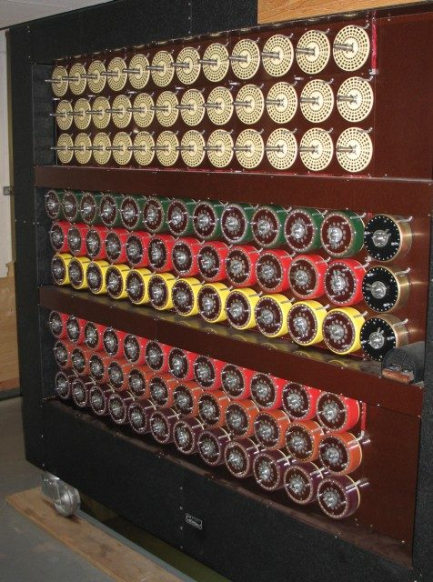
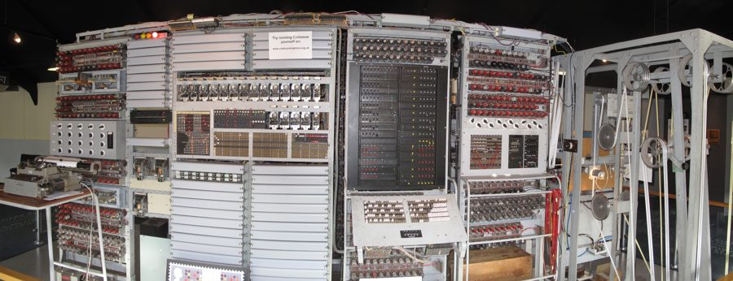
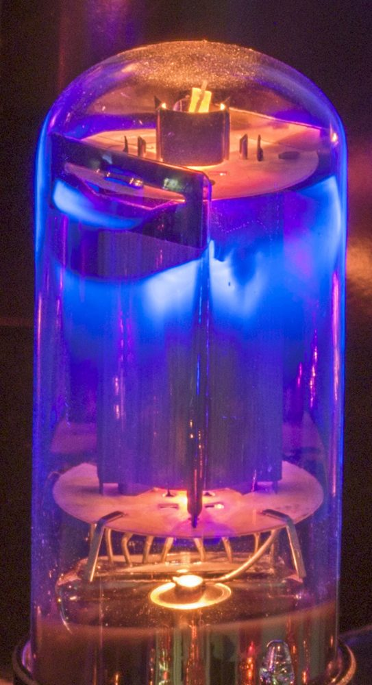
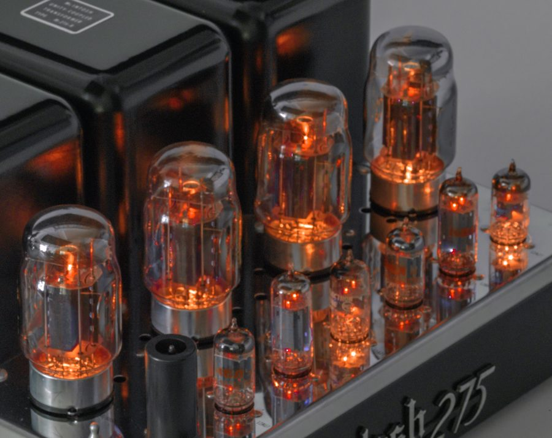
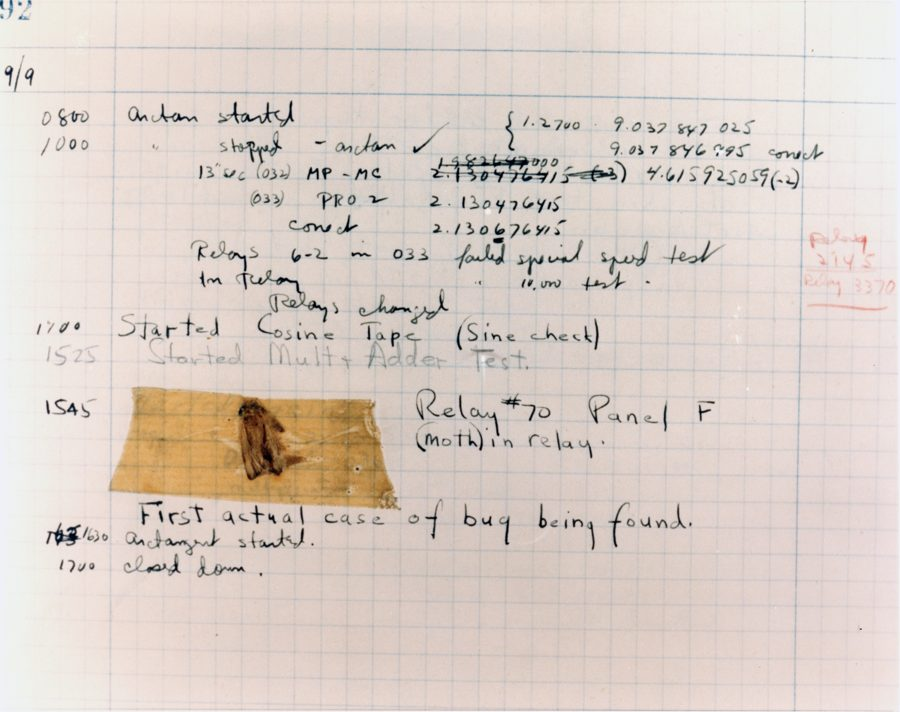
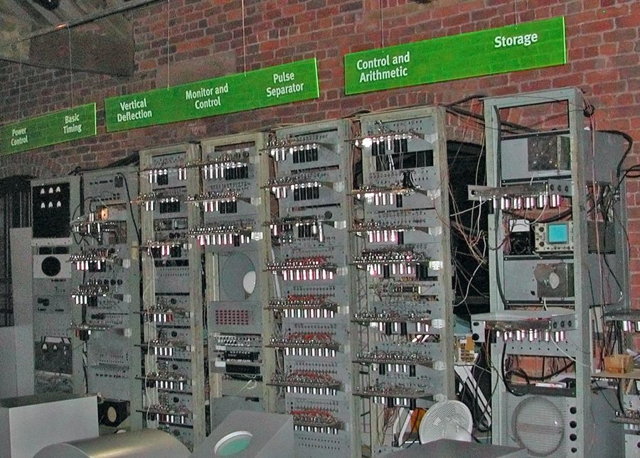

Od Dahla do EnigmyFrom Dahl to Enigma
- Wiem, że Roald Dahl był nie tylko pisarzem, ale też pilotem i współpracownikiem brytyjskiego wywiadu. I know that Roald Dahl was not only a writer but also a pilot and worked with British intelligence.
- Potrafię wyjaśnić, czym była Enigma i dlaczego trudno było ją złamać. I can explain what Enigma was and why it was hard to break.
- Potrafię opowiedzieć, jaką rolę odegrali polscy matematycy i jak ich praca pomogła w Bletchley Park. I can describe the role of the Polish mathematicians and how their work helped Bletchley Park.
Roald Dahl: pisarz, pilot i agent / Roald Dahl: writer, pilot and agent
Autor Charliego i fabryki czekolady i Matyldy miał niezwykłe życie. W czasie II wojny światowej był pilotem myśliwskim RAF: we wrześniu 1940 roku rozbił się dwupłatowcem Gloster Gladiator na pustyni w Afryce Północnej, a w 1941 roku latał samolotem Hurricane nad Grecją. Po ciężkich obrażeniach nie mógł już latać, więc w 1942 roku wysłano go do ambasady brytyjskiej w Waszyngtonie. Tam współpracował z British Security Coordination — tajną siatką założoną przez brytyjski wywiad MI6. W tym samym czasie zaczął pisać: jego pierwsza książka dla dzieci, The Gremlins, ukazała się w 1943 roku.
The author of Charlie and the Chocolate Factory and Matilda had an extraordinary life. During the Second World War he was an RAF fighter pilot: in September 1940 he crash-landed a Gloster Gladiator biplane in the North African desert, and in 1941 he flew a Hurricane over Greece. After serious injuries he could no longer fly, so in 1942 he was sent to the British Embassy in Washington. There he worked with British Security Coordination — a secret network set up by British intelligence, MI6. At the same time he started writing: his first children’s book, The Gremlins, came out in 1943.
Później napisał scenariusz do filmu o Jamesie Bondzie Żyje się tylko dwa razy (1967), a nawet pomógł wynaleźć zastawkę medyczną (zastawkę Wade’a–Dahla–Tilla), stosowaną w leczeniu dzieci. Pisarz, pilot, agent, wynalazca — jedna osoba.
Later he wrote the screenplay for the James Bond film You Only Live Twice (1967) and even helped to invent a medical valve (the Wade–Dahl–Till valve) used to treat children. Writer, pilot, agent, inventor — one person.
Ścisły umysł i wyobraźnia idą w parze / A logical mind and imagination go hand in hand
Ktoś, kto dobrze liczy, może równie dobrze pisać — i odwrotnie. Łamacze kodów potrzebowali logiki matematyków i wyczucia języka pisarzy. Dlatego zagadki GCHQ mieszają matematykę, gry słowne, języki obce i sztukę. Nie musisz wybierać, czy jesteś „ścisłowcem”, czy „humanistą”.
Someone who is good at maths can be just as good at writing — and the other way round. Codebreakers needed both the logic of mathematicians and the feel for language of writers. That is why GCHQ puzzles mix maths, wordplay, foreign languages and art. You do not have to choose between being a “maths person” and an “English person”.
Czym była Enigma? / What was Enigma?
Enigma to niemiecka maszyna szyfrująca, której armia używała od końca lat 20. aż do końca II wojny światowej. Wyglądała jak maszyna do pisania. Po naciśnięciu klawisza prąd płynął przez obracające się bębenki szyfrujące (wirniki) i zapalała się inna litera. Po każdym naciśnięciu bębenek się obracał, więc ta sama litera za każdym razem szyfrowała się inaczej. Wojskowa Enigma miała około 159 000 000 000 000 000 000 możliwych ustawień.
Enigma was a German cipher machine used by the armed forces from the late 1920s until the end of the Second World War. It looked like a typewriter. When you pressed a key, an electric current ran through turning rotors and a different letter lit up. After every key press a rotor turned, so the same letter was encrypted differently each time. The military Enigma had about 159,000,000,000,000,000,000 possible settings.
Wypróbuj model Enigmy / Try a model of Enigma
Uproszczony model: jeden bębenek szyfrujący i bębenek odwracający (prawdziwa Enigma miała trzy bębenki szyfrujące i łącznicę wtyczkową). Wpisz AAAAAAAA i zobacz, co się dzieje. A simplified model: one rotor and a reflector (the real Enigma had three rotors and a plugboard). Type AAAAAAAA and see what happens.
· Teraz / Now: A
🔧 Chcesz pełną Enigmę z trzema bębenkami i łącznicą wtyczkową? Symulator Enigmy w cryptii → Want the full Enigma with three rotors and a plugboard? Try the Enigma simulator on cryptii.
Zauważ dwie rzeczy. Po pierwsze: ta sama litera daje za każdym razem inny wynik. Po drugie: litera nigdy nie zamienia się sama w siebie — A nigdy nie staje się A. To była słabość Enigmy, którą wykorzystali łamacze kodów. A jeśli ustawisz tę samą pozycję początkową i wpiszesz szyfrogram, otrzymasz tekst jawny.
Notice two things. First: the same letter gives a different result every time. Second: a letter never turns into itself — A never becomes A. That was Enigma’s weakness, and the codebreakers used it. And if you set the same start position and type the ciphertext, you get the plaintext back.
Polacy jako pierwsi złamali Enigmę / The Poles were the first to break Enigma
- 1929 — Na Uniwersytecie w Poznaniu rusza tajny kurs kryptologii dla studentów matematyki. Najlepsi — Marian Rejewski, Jerzy Różycki i Henryk Zygalski — trafiają do Biura Szyfrów Oddziału II Sztabu Głównego. A secret cryptology course for maths students starts at the University of Poznań. The best — Marian Rejewski, Jerzy Różycki and Henryk Zygalski — join the Cipher Bureau of the Polish General Staff.
- Grudzień 1932 / December 1932 — Rejewski, korzystając z matematyki i dokumentów od wywiadu francuskiego, odtwarza wewnętrzne połączenia bębenków Enigmy. Pod koniec grudnia w Pałacu Saskim w Warszawie Polacy odczytują pierwsze wiadomości. Using mathematics and documents from French intelligence, Rejewski works out how Enigma is wired. At the end of December, in the Saxon Palace in Warsaw, the Poles read the first messages.
- 1934–1938 — Powstają cyklometr, bomba kryptologiczna Rejewskiego i perforowane płachty Zygalskiego. The cyclometer, Rejewski’s cryptologic bomb and Zygalski’s perforated sheets are created.
- 25 lipca 1939 / 25 July 1939 — W tajnym ośrodku w Pyrach, w Lesie Kabackim — około 4 km od naszej szkoły w Wilanowie — Polacy pokazują swoje osiągnięcia Brytyjczykom (m.in. Alastairowi Dennistonowi i Dilly’emu Knoksowi) i Francuzom. Przekazują im kopie Enigmy i swoją wiedzę. At a secret centre in Pyry, in the Kabaty Forest — about 4 km from our school in Wilanów — the Poles show their work to the British (including Alastair Denniston and Dilly Knox) and the French. They hand over copies of Enigma and their knowledge.
- Styczeń 1940 / January 1940 — Po klęsce Polski zespół zostaje ewakuowany do Francji. Alan Turing z Bletchley Park jedzie do Paryża i rozmawia z Rejewskim. Te rozmowy są kluczowe dla konstrukcji pierwszej brytyjskiej maszyny Bombe. After Poland falls, the team is evacuated to France. Alan Turing from Bletchley Park travels to Paris and talks with Rejewski. These conversations are key to the design of the first British Bombe.
- 1946 — Szkoła szyfrów z Bletchley Park zmienia nazwę na GCHQ, czyli Government Communications Headquarters (dosłownie „Rządowa Centrala Łączności”) — to ta sama instytucja, która dziś przygotowuje świąteczny konkurs Christmas Challenge. The codebreaking school from Bletchley Park is renamed GCHQ, Government Communications Headquarters — the same organisation that prepares the Christmas Challenge today.
Jak blisko naszej szkoły? / How close to our school?
Tajny ośrodek Biura Szyfrów w Pyrach, w Lesie Kabackim, leży zaledwie około 4 km w linii prostej od naszej szkoły. Dziś przed bramą jednostki wojskowej przy ul. Leśnej stoi głaz z tablicą upamiętniającą polskich kryptologów, odsłonięty 1 października 1997 roku.
The secret Cipher Bureau centre at Pyry, in the Kabaty Forest, is only about 4 km in a straight line from our school. Today a boulder with a plaque honouring the Polish codebreakers stands in front of the gate of a military unit on Leśna Street. It was unveiled on 1 October 1997.
Mapa ładuje się z OpenStreetMap dopiero po kliknięciu. / The map loads from OpenStreetMap only after you click. Trasa piesza w OpenStreetMap / Walking route in OpenStreetMap ↗
Od Bomby do komputera / From the Bombe to the computer
Maszyny, które pomagały łamać szyfry w czasie wojny, nie były jeszcze komputerami takimi jak dzisiejsze. Krok po kroku prowadziły jednak do nich.
The machines that helped to break codes during the war were not yet computers like the ones we use today. Step by step, though, they led to them.
- Enigma i Polacy (1932–1939). Rejewski rozpracował Enigmę za pomocą matematyki. W 1938 roku powstała polska bomba. 25 lipca 1939 roku w Pyrach Polacy przekazali swoją wiedzę Brytyjczykom i Francuzom.
Enigma and the Poles (1932–1939). Rejewski worked out how Enigma was wired using maths. In 1938 the Polish bomba was built. On 25 July 1939, at Pyry, the Poles shared what they knew with the British and the French. - Bombe Turinga (1940). Turing i Welchman zbudowali w Bletchley Park większą maszynę z bębnami i przekaźnikami. Szukała ustawień Enigmy, sprawdzając „prawdopodobne słowo”. Była wolna i głośna, ale na Enigmę wystarczała.
Turing’s Bombe (1940). Turing and Welchman built a bigger machine with drums and relays at Bletchley Park. It searched for Enigma settings by testing a “crib” (a word likely to be in the message). It was slow and noisy, but good enough for Enigma. - Nowy, trudniejszy szyfr: Lorenz (1941–1942). Najwyżsi niemieccy dowódcy szyfrowali dalekopisy maszyną Lorenza. Miała aż 12 kółek, a Enigma tylko 3–4 bębny. W 1942 roku Bill Tutte odgadł, jak jest zbudowana, choć nigdy jej nie widział — tylko z przechwyconych wiadomości!
A new, harder cipher: Lorenz (1941–1942). Germany’s top commanders sent teleprinter messages enciphered by the Lorenz machine. It had 12 wheels, while Enigma had only 3–4 rotors. In 1942 Bill Tutte worked out how it was built without ever seeing one — only from intercepted messages! - Heath Robinson (1943). Pierwsza maszyna do Lorenza porównywała dwie taśmy papierowe. Taśmy się rwały i rozjeżdżały, więc maszyna była zbyt wolna i zawodna.
Heath Robinson (1943). The first machine for Lorenz compared two paper tapes. The tapes tore and slipped out of step, so it was too slow and unreliable. - Colossus (1944). Inżynier Tommy Flowers zamienił jedną taśmę i przekaźniki na lampy próżniowe, które przełączają się tysiące razy szybciej. Colossus czytał 5000 znaków na sekundę i pomógł przed lądowaniem w Normandii w czerwcu 1944 roku.
Colossus (1944). Engineer Tommy Flowers replaced one tape and the relays with valves, which switch thousands of times faster. Colossus read 5,000 characters a second and helped before the D-Day landings in June 1944.
| Kiedy / When | Maszyna / Machine | Jak działała? / How did it work? |
|---|---|---|
| 1938 | Bomba kryptologiczna Polish cryptologic bomb | Rejewski: elektromechaniczna — wirujące bębny Enigmy szukały klucza dnia. Rejewski: electromechanical — spinning Enigma rotors searched for the daily key. |
| 1940 | Bombe British Bombe | Turing i Welchman: też elektromechaniczna, z bębnami i przekaźnikami. To jeszcze nie komputer. Turing and Welchman: also electromechanical, with drums and relays. Not yet a computer. |
| 1944 | Colossus | Inżynier Tommy Flowers, Bletchley Park: pierwsza duża elektroniczna maszyna, około 1600–2400 lamp próżniowych. Łamała szyfr Lorenz, a nie Enigmę. „Program” ustawiano przełącznikami i kablami — nie był zapisany w pamięci. Engineer Tommy Flowers, Bletchley Park: the first large electronic machine, with about 1,600–2,400 valves. It broke the Lorenz cipher, not Enigma. Its “program” was set with switches and plugs — it was not stored in memory. |
| 1945 | Program w pamięci The stored program | John von Neumann opisuje komputer, który trzyma program i dane w tej samej pamięci. Podobny komputer (ACE) projektuje Alan Turing; ten pomysł wyrasta z jego „maszyny uniwersalnej” z 1936 roku. John von Neumann describes a computer that keeps the program and the data in the same memory. Alan Turing designs a similar computer (ACE); the idea grows out of his 1936 “universal machine”. |
| 21 VI 1948 | Manchester Baby | Pierwszy komputer, który uruchomił program zapisany w swojej pamięci — tak jak każdy dzisiejszy komputer i telefon. The first computer to run a program stored in its own memory — just like every computer and phone today. |

Fot. / Photo: Ian Petticrew, CC BY-SA 2.0, Wikimedia Commons

Fot. / Photo: TedColes, CC BY-SA 4.0, Wikimedia Commons
Jak świeciły lampy? / How did the valves glow?

Fot. / Photo: Sebastian Nizan, CC BY-SA 4.0, Wikimedia Commons

Fot. / Photo: Sebastian Nizan, CC BY-SA 4.0, Wikimedia Commons
W środku lampy próżniowej jest żarnik, jak w starej żarówce. Rozgrzewa się na pomarańczowo, a gorąca elektroda wysyła elektrony. Lampa działa jak bardzo szybki przełącznik: przepuszcza prąd albo nie — czyli 1 albo 0.
Inside a valve there is a heater, like in an old light bulb. It glows orange, and the hot electrode gives off electrons. A valve works like a very fast switch: it lets current through or it does not — that is, 1 or 0.
Lampy psuły się najczęściej przy włączaniu i wyłączaniu, gdy nagle się nagrzewały i stygły. Tommy Flowers wiedział, że lampy działające bez przerwy psują się rzadko — dlatego Colossusa w ogóle nie wyłączano. Z ponad tysiącem świecących lamp był ciepły i głośny, a pracował dzień i noc.
Valves failed most often when they were switched on and off, as they suddenly heated up and cooled down. Tommy Flowers knew that valves left running all the time rarely failed — so Colossus was never switched off. With over a thousand glowing valves it was warm and noisy, and it worked day and night.
Did you know? On 9 September 1947 a moth was found stuck in one of the relays of the American Harvard Mark II computer. Someone taped it into the logbook with the note “First actual case of bug being found”. It was a joke, because the word bug for a fault in a machine was already in use — Edison used it, for example. Today we call finding mistakes in a program debugging.

Fot. / Photo: Naval Surface Warfare Center, Dahlgren, VA, 1988, domena publiczna / public domain, Wikimedia Commons

Fot. / Photo: Ian Dunster, Racklever, domena publiczna / public domain, Wikimedia Commons
Ćwiczenia / Practice
Ustaw w modelu pozycję początkową A i wpisz szyfrogram JNC. Jakie słowo otrzymujesz?
Set the model’s start position to A and type the ciphertext JNC. Which word do you get?
Podpowiedź / Hint
Najpierw wyczyść pole tekstowe. Ta sama pozycja początkowa odszyfrowuje wiadomość.
Clear the text box first. The same start position decrypts the message.
W którą literę Enigma nigdy nie mogła zamienić litery E?
Which letter could Enigma never turn the letter E into?
Podpowiedź / Hint
Pomyśl o słabości maszyny opisanej powyżej.
Think about the machine’s weakness described above.
W którym roku polscy kryptolodzy po raz pierwszy odczytali wiadomości Enigmy?
In which year did the Polish codebreakers first read Enigma messages?
Podpowiedź / Hint
Spójrz na oś czasu.
Look at the timeline.
Filmy o Roaldzie Dahlu / Videos about Roald Dahl
- ▶ The Roald Dahl Short Biography for Kids and Students — Kidzoneer, 4 min. Krótka biografia Dahla dla dzieci. A short biography of Dahl for children.
- ▶ Life of Roald Dahl for Kids — Bedtime History, 11 min. Życie Dahla opowiedziane dla dzieci. Dahl’s life told for children.
Linki otwierają YouTube w nowej karcie. / The links open YouTube in a new tab.